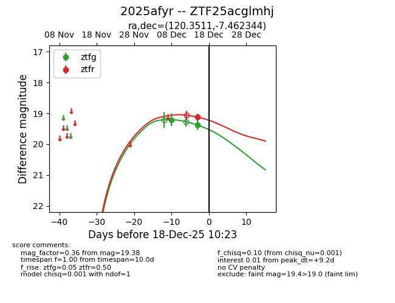
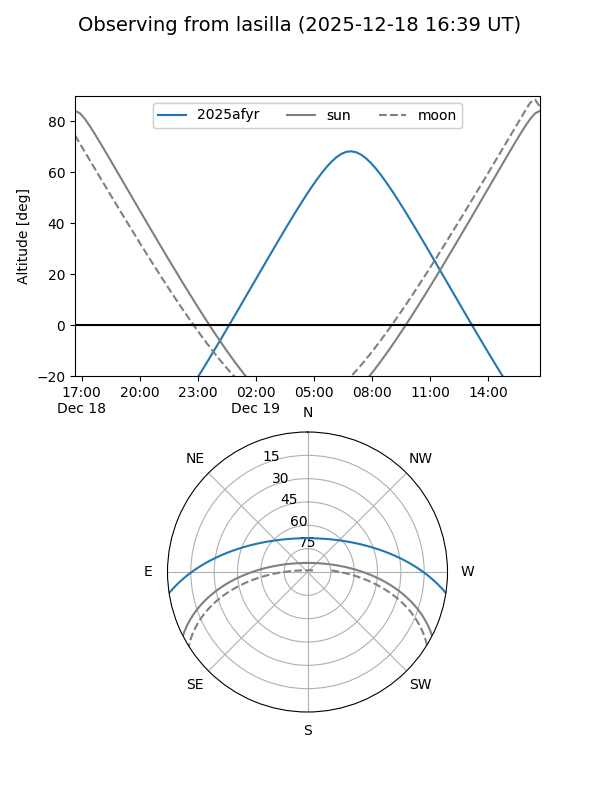
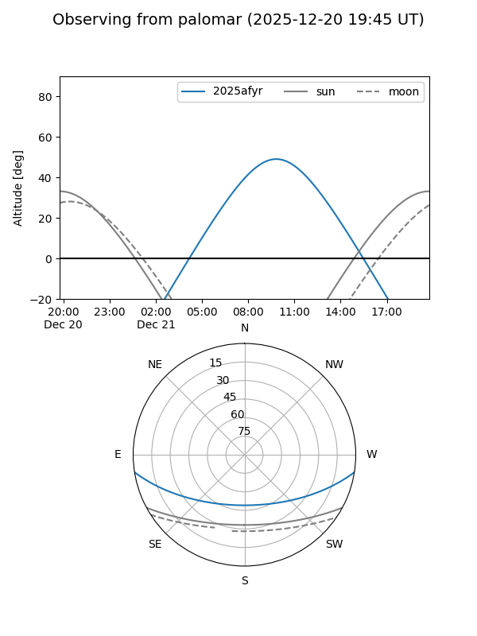
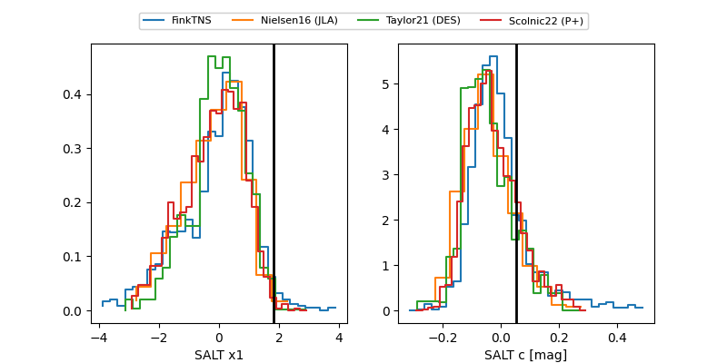

2025afyr
Target 2025afyr at 2025-12-21 11:02
Aliases and brokers:
FINK: fink-portal.org/ZTF25acglmhj
Lasair: lasair-ztf.lsst.ac.uk/objects/ZTF25acglmhj
ALeRCE: alerce.online/object/ZTF25acglmhj
TNS: wis-tns.org/object/2025afyr
YSE: ziggy.ucolick.org/yse/transient_detail/2025afyr
alt names
ZTF25acglmhj (ztf,fink_ztf)
2025afyr (tns,yse)
Coordinates:
equatorial (ra, dec) = 120.3511,-7.46234
equatorial (HMS+DMS) = 08:01:24.27,-07:27:44.44
galactic (l, b) = (227.8236,+11.88888)
Flags:
Photometry:
last ztfg=19.77, ztfr=19.35
4 ztfg, 3 ztfr detections
Lightcurve

Visibility


Additional plots
